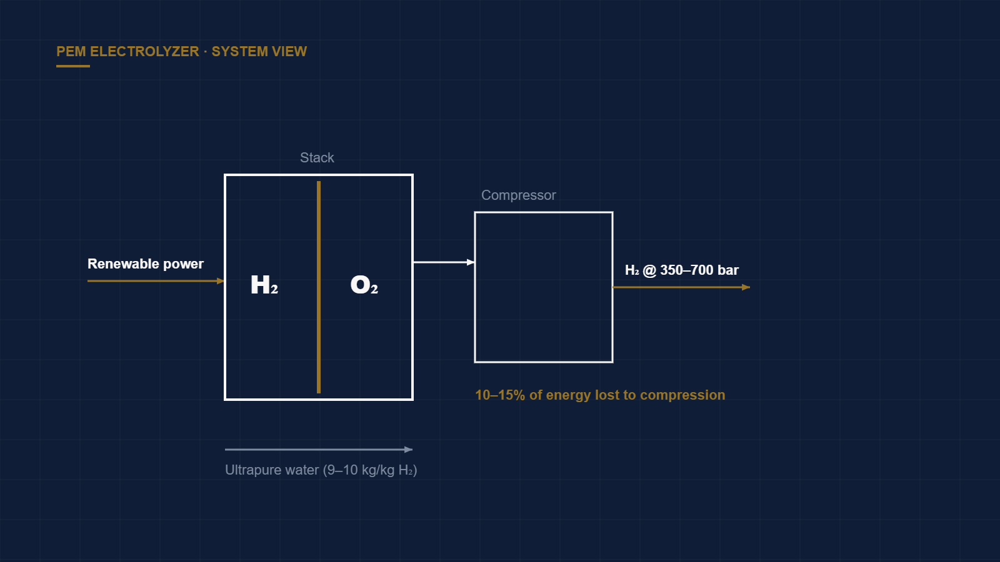

The Real Bottleneck in Green Hydrogen Isn't the Electrolyzer
← Back to Intelligence Hub
Every green-hydrogen pitch opens with electrolyzer stack efficiency. It is the wrong headline. Once you build a full system model, the stack is rarely the dominant loss or cost term — the balance-of-plant and the input power are. Confusing stack efficiency with system efficiency is the most common error in hydrogen diligence, and it always biases the economics optimistic.
Following the energy from water to useful gas
A stack might convert electricity to hydrogen at ~70% higher-heating-value efficiency (roughly 50 kWh per kg). But the delivered product carries a chain of parasitic loads on top of that:
- Water treatment. PEM and alkaline electrolyzers demand ultrapure, deionized water — on the order of 9–10 kg of water per kg of H₂ stoichiometrically, and more in practice after purification losses. In the sunny, wind-rich, water-stressed regions where the cheapest renewables live, sourcing and purifying that water is a real cost and siting constraint, not a rounding error.
- Compression. Hydrogen leaves the stack at low pressure and must be compressed to 350–700 bar for storage or transport. Because hydrogen is so light, compression is energetically expensive — commonly 10–15% of the energy embodied in the gas itself — and hydrogen compressors are a maintenance and reliability burden of their own.
- Rectification and thermal loads. AC-to-DC conversion, heat rejection, and auxiliary systems each shave points off the wall-plug number the vendor quotes on the datasheet.
The capacity-factor trap
The deeper economic driver is utilization. Electrolyzer CapEx is amortized over every kilogram produced, so a stack running on intermittent renewables at a 30–40% capacity factor produces hydrogen at a far higher unit cost than the same stack run flat-out — even though the intermittent power is "cheaper." This is the tension at the heart of green hydrogen: the cheapest electrons are variable, but the most economic use of an expensive electrolyzer wants steady, high-utilization operation. Firming the power (via grid connection, storage, or overbuild) reintroduces cost precisely where the pitch claimed savings.
The diligence lens
Ask for the delivered cost of hydrogen at the fence line, at the real annual capacity factor, at delivery pressure — not the stack efficiency on the datasheet at 100% utilization. The gap between those two numbers is where the economics actually live.
Verdict
The teams that win green hydrogen will compete on integrated system efficiency, cheap firmed power, and high utilization — not on another point of stack performance. When a memo leads with stack efficiency and a spot power price, treat it as incomplete until you see the system-level, capacity-factor-adjusted delivered cost.